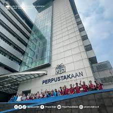

Pusat Perpustakaan UIN Syarif Hidayatullah merupakan peralihan nama dari Perpustakaan Utama sesuai dengan ORTAKER (Organisasi Tata Kerja) baru di lingkungan UIN Syarif Hidayatullah Jakarta. Sedangkan Perpustakaan Utama itu sendiri dahulu juga merupakan peralihan nama dari Perpustakaan IAIN Jakarta, yang didirikan seiring dengan berdirinya IAIN itu sendiri, yaitu sejak berdirinya ADIA (Akademi Dinas Ilmu Agama) pada tanggal 1 Juni 1957. Pada waktu itu kondisi perpustakaan masih sangat sederhana, hanya terdiri dari satu ruangan dengan koleksi sebanyak 2000 eksemplar, dan hanya dikelola oleh seorang pegawai.
Seiring dengan berubahnya status IAIN menjadi UIN (SK Presiden No. 31 tanggal 20 Mei 2002), maka secara otomatis nama perpustakaan pun ikut berubah yaitu menjadi “Perpustakaan Utama Universitas Islam Negeri Syarif Hidayatullah Jakartaâ€.
website Perpustakaan :Perpustakaan Pusat Uin Jakarta| E-Resource | Penjelasan |
|---|---|
| JStor | JStore JSTOR (diucapkan JAY-stor; singkatan dari Journal Storage) adalah sebuah perpustakaan digital yang didirikan tahun 1995. Perpustakaan ini sebelumnya berisi terbitan jurnal akademik yang terdigitalisasi. Sekarang, koleksinya juga mencakup buku-buku dan sumber primer, serta terbitan jurnal terbaru. |